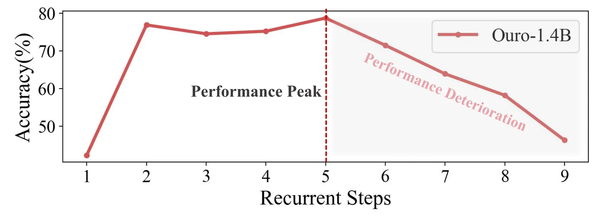
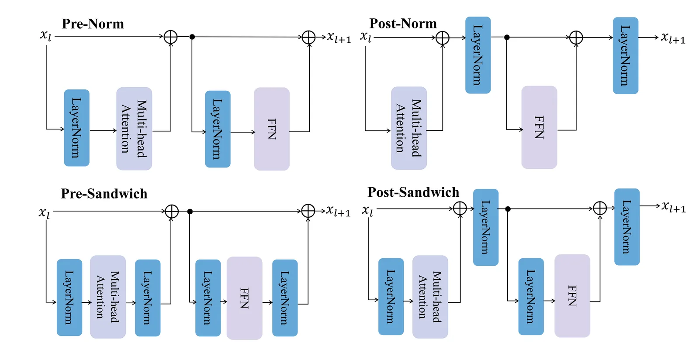
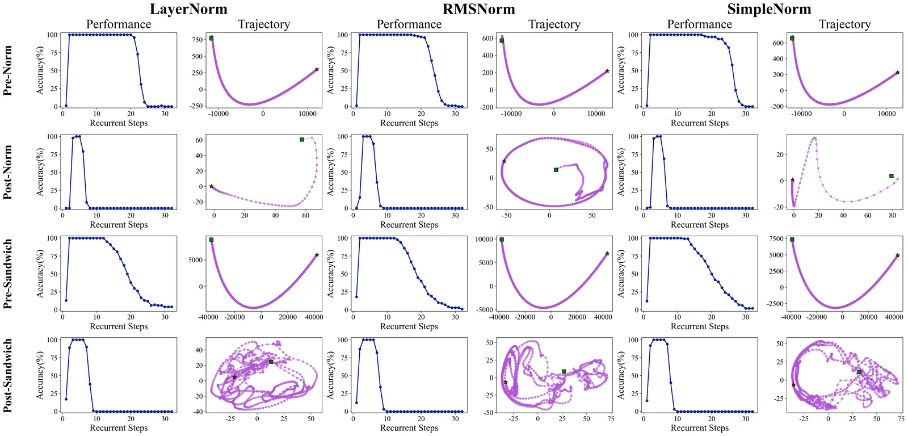
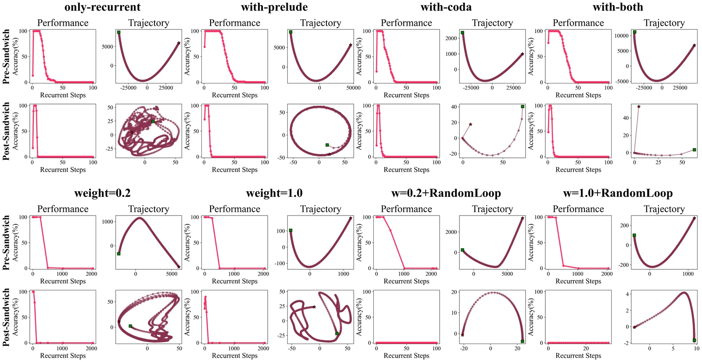
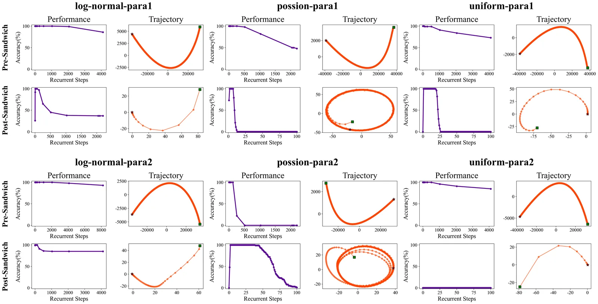
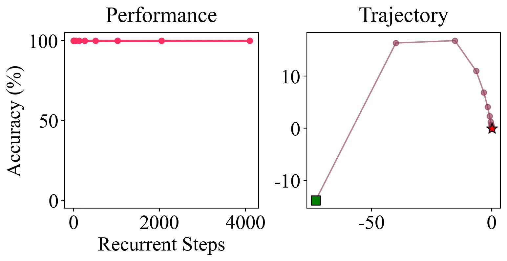
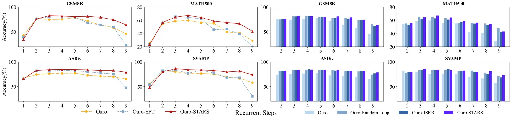
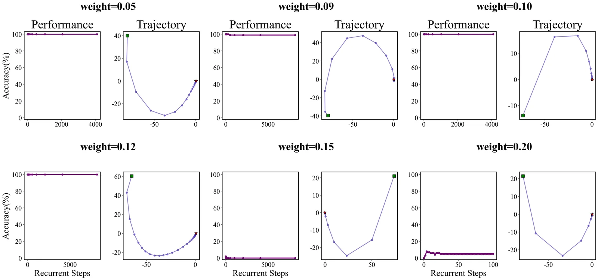

STARS: Stabilizing Recurrent Dynamics for Test-Time Scalable Latent Reasoning in Looped Language Models
论文信息: arXiv 2605.26733, ICML 2026
作者: Xiao-Wen Yang, Zi-Yu Han, Xi-Hua Zhang, Wen-Da Wei, Jie-Jing Shao, Lan-Zhe Guo, Yu-Feng Li (南京大学)
代码: https://github.com/njuyxw/STARS
Tags: objective-loss · training-algorithm · language-modeling · reasoning · scaling
问题动机
Looped Language Models (LoopLMs) 通过共享权重的 depth recurrence 实现 latent reasoning，理论上推理时增加循环次数即可加强推理能力，无需扩展参数量。然而实践中，当前 LoopLM（如 Ouro-1.4B）在 test-time scaling 时表现极不可靠：性能在某个循环深度达到峰值后急剧崩溃。

如图所示，Ouro-1.4B 在 GSM8K 上的准确率在训练循环步数附近达到峰值，一旦超出训练分布就迅速退化。这表明 direct SFT 并未赋予模型 test-time scalable reasoning 能力，而仅让模型过拟合到训练时的固定循环次数。
核心问题：为什么当前 LoopLM 无法实现可靠的 test-time scaling？能否从动力系统视角找到根本原因并解决？
核心想法
作者从离散时间动力系统视角出发，发现当前 LoopLM 架构中存在一个不可调和的 有效性 vs 稳定性 的根本矛盾：
- Internal normalization（如 Pre-Norm）：残差连接在 Norm 之外，信息流畅但隐状态范数指数增长 → 轨迹发散
- External normalization（如 Post-Norm）：残差被 Norm 约束，轨迹有界但收敛到无效吸引子 → 推理浅薄
Key Insight: 推理是逐步降低不确定性的迭代过程；在动力学上，隐状态应收敛到一个既有效又稳定的不动点。如果有效但不稳定，思维变混乱；如果稳定但无效，思维停留浅层。
因此提出 STARS (STAbility-driven Recurrent Scaling)：通过 Jacobian 谱半径正则化 (JSRR) + 随机循环采样 (Random Loop)，约束循环动力学的谱半径 <1，使系统收敛到渐近稳定不动点。
方法细节
1. LoopLM 形式化
LoopLM 的前向过程为：
将循环体视为离散动力系统：
其中 \mathbf{h}^{(t)} \in \mathbb{R}^D（D = M \cdot d）为展平的隐状态。Test-time scaling 即延长系统的轨迹长度。
不动点：\Phi_\theta(\mathbf{h}^\star) = \mathbf{h}^\star，一旦到达即不再变化。渐近稳定不动点：附近的轨迹都会收敛到它。
2. 诊断分析：稳定性 vs 有效性的二元困境


在 4-digit addition 控制实验中（T_{\text{train}}=4），对 12 种 Norm 配置（3 种算子 × 4 种位置）的分析揭示：
| 发现 | 内容 |
|---|---|
| Finding 1 | 具体的 Norm 算子（LN/RMS/Simple）对动力学几乎无影响，位置才是决定因素 |
| Finding 2 | Internal Norm 保持信息流但隐状态发散；External Norm 确保有界但收敛到退化吸引子 |
| Finding 3 | Prelude/Coda 层不改变系统的动力学倾向 |
| Finding 4 | 随机循环采样显著增强性能保持，但不根本改变有效稳定性 |
| Finding 5 | L2 正则化效果微乎其微，与随机循环组合反而更差 |


3. STARS 训练框架
Lyapunov 线性化定理
对于不动点 \mathbf{h}^\star，其局部稳定性由 Jacobian 矩阵的谱半径决定：
若 \rho(J(\mathbf{h}^\star)) < 1，则不动点渐近稳定，扰动指数衰减。谱半径越小，收敛越快。
Jacobian 谱半径正则化 (JSRR)
直接计算 J \in \mathbb{R}^{D \times D} 的特征值不可行。STARS 用 单步 power iteration + JVP 高效估计：
- 初始化随机向量 \mathbf{v} \sim \mathcal{N}(0, I)，归一化
- 计算 \mathbf{j} = \text{JVP}(\Phi_\theta, \mathbf{h}^{(t)}, \mathbf{v})（Jacobian-向量积，不需显式构建 Jacobian）
- 谱半径估计：\rho \approx \|\mathbf{j}\|_2
JSRR 损失（对迭代 t、batch 大小 N）：
相比传统的 Frobenius 范数约束（\rho(J) \le \|J\|_F），直接正则化谱半径更精确，不会过度压缩表达能力。
总目标：JSRR + Random Loop
- t 从分布 \mathcal{P}（如 Log-Normal）采样，使正则化覆盖整条轨迹
- \lambda 为平衡超参数（实验中取 0.1）
采样 t 的分布使模型在训练中遍历多种循环深度的状态，JSRR 则在每种深度下都约束谱半径趋近于零，从而在全局尺度上优化轨迹的稳定性。
关键结果
Multi-digit Addition（合成任务）

STARS 在 Post-Sandwich LN 架构上取得 100% 准确率，且在任意循环步数下保持稳定。PCA 轨迹清晰显示隐状态快速收敛到稳定不动点。
数学推理任务（Ouro-1.4B 微调）
| 模型 | Recurrents | GSM8K | MATH500 | ASDiv | SVAMP | AMC23 | AVG |
|---|---|---|---|---|---|---|---|
| Ouro-1.4B | 4 | 75.21 | 59.60 | 76.57 | 75.67 | 50.00 | 67.41 |
| Ouro-1.4B | 8 | 58.23 | 40.80 | 70.07 | 66.33 | 40.00 | 55.09 |
| Ouro-1.4B-SFT | 4 | 80.06 | 64.60 | 83.47 | 76.67 | 47.50 | 70.46 |
| Ouro-1.4B-SFT | 8 | 60.05 | 39.20 | 75.10 | 68.00 | 22.50 | 52.97 |
| Ouro-1.4B-STARS | 4 | 81.96 | 67.40 | 84.73 | 84.33 | 52.50 | 74.18 |
| Ouro-1.4B-STARS | 8 | 74.45 | 54.80 | 82.52 | 81.00 | 35.00 | 65.55 |
关键数据：
- STARS 在 4 步时 peak 性能比原始 Ouro 高 +6.77% (AVG)，比 SFT 高 +3.72%
- 从 4→8 步，Ouro 下降 12.32%，SFT 下降 17.49%，STARS 仅下降 8.63%
- 在 GSM8K 上 Ouro 下降 20.47%，STARS 仅下降 8.26%

消融实验表明 Random Loop 和 JSRR 各自都有贡献，二者结合效果最优。
训练效率
| 方法 | 相对训练开销 |
|---|---|
| Ouro-SFT | 1× |
| Ouro-Random Loop | 1.50× |
| Ouro-JSRR | 1.53× |
| Ouro-STARS | 2.04× |
STARS 约带来 2 倍训练开销（主要来自 JVP 计算），但推理时无额外成本。
超参数 \lambda 分析

\lambda 过大（0.15-0.20）会抑制模型的有效学习能力，实验中 \lambda=0.1 为较好选择。
局限与延伸阅读
局限性
- 任务覆盖有限：仅在数学推理上验证，对常识推理、策略规划等领域的泛化性未知
- 非单调提升：STARS 防止了灾难性崩溃并使 scaling 能超出训练范围，但性能并不随步数单调增长——在困难问题上实现完全可靠的 test-time scaling 仍是开放问题
- 训练开销：2 倍训练成本对大规模预训练而言不容忽视
与本主题其他论文的关系
| 论文 | 关系 |
|---|---|
| Ouro (Zhu et al., 2025) | STARS 直接在 Ouro-1.4B 上微调验证，解决其 scaling 退化问题 |
| Huginn (Geiping et al., 2025) | STARS 借鉴了 Huginn 的 Prelude/Coda + Random Loop 设计，并诊断了这些机制的局限性 |
| DEQ (Bai et al., 2019) | DEQ 用 Frobenius 范数约束来稳定不动点求解，STARS 论证了谱半径正则化比 Frobenius 范数更精确 |
| Universal Transformer (Dehghani et al., 2019) | 循环深度架构的早期工作，STARS 在此基础上解决了深度外推的稳定性问题 |
延伸方向
- 将 STARS 扩展到更多推理和规划任务
- 探索自适应机制，更鲁棒地引导轨迹朝向最优稳定不动点
- 结合 early exit / adaptive depth 策略实现动态推理资源分配